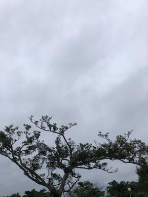
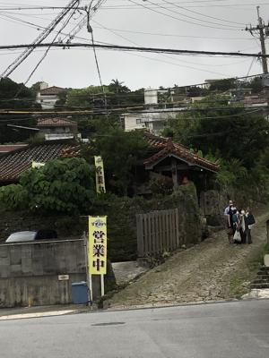
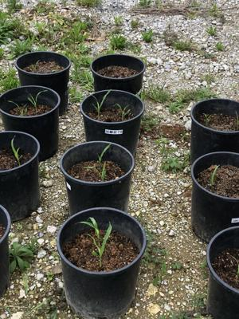
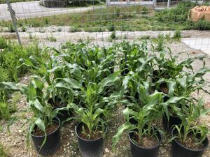
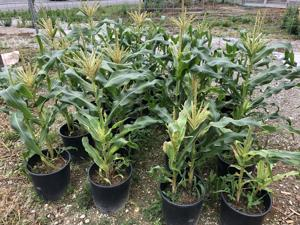
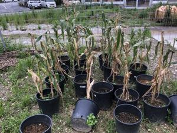
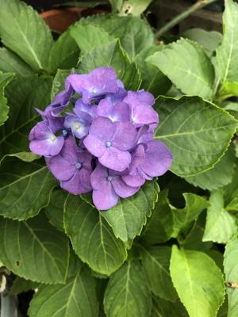

うるがいの話 ある日
最新: 長雨【うるがいの話 ある日】とは 一日だけのプログです
『うるがいの話』の最新一日だけのプログで、通信料が少なく経済的だ。カニの画像をクリックすると全ての日付が載る『うるがいの話』サイトを表示します
|
|
【うるがいの話】 うるがい(ｳﾙｶﾞｲ urugai)とは、『もずくがに』の名前でとても大きくなります。 |
|---|---|
|
|
【カミマヤーの話】 猫のことを方言でマヤーといいます。カミマヤー（kamimayaa）とは、神の猫のことです。 |
|
【たながぁの音楽】 たながぁ（ﾀﾅｶﾞｰ tanagaa）とは手長えびのことで、何種類かあり大きいのは車 エビぐらいになります。 |

|
【ぶながぁの話】 ぶながぁ(ﾌﾞﾅｶﾞｰ bunagaa)とは、赤い髪の毛、赤い身体、そして身長は１ｍ２０ｃｍ ぐらい、川の蟹を食べているの目撃された。場所は沖縄県国頭郡大宜味村のと ある村僕の隣近所に住んでいる爺さんから、聞いた話です。 |
|
|
【ギーマの話】 ギーマ(giima)とは、山原の里山に咲くスズランに似た、 花を付けます。実は食べられます、 気が付くと口の周りが紫になっています。 |
2022年06月11日 (土）長雨
16:04
 
   
ジョギングコースにある農業試験場のトウモロコシが、この長雨で悲惨な状況
になってる。日照不足、ベランダのひまわりもモヤシ状態である。首里金城町
石畳道の麓にあるお店の夜間営業が、数年ぶりに営業していた。ちらほら、観
光客がお店に入っていくのを見かける。ヨメのお母さんは、毎日ヨメに家に帰
りたいと電話から訴える、それはできないと説得する、とうとう今日は途中で
電話をきった。ストレスのたまるヨメは、ひたすらアマゾンプライムで映画を
見ている。うっとうしい天気だ、来週は晴れて欲しい。

１５時５５分 ビットコインの総資産 ￥１１、４０３↓